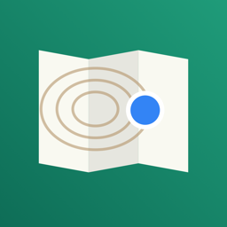

MapsheetEn vigueur le 8 novembre 2026.
Mapsheet est conçu pour que votre travail reste le vôtre. Pas de compte, pas de serveur, pas d'analyse d'utilisation.
Vos cartes, les points, traces, lignes, surfaces et photos que vous ajoutez, et votre position sont stockés uniquement sur votre iPhone ou iPad (et dans ses sauvegardes). Mapsheet ne les envoie nulle part.
Mapsheet utilise votre position pour vous situer sur vos cartes et enregistrer les traces que vous lancez, y compris écran verrouillé pendant un enregistrement. Votre position ne quitte jamais votre appareil.
Les photos jointes aux points sont enregistrées avec votre carte, sur votre appareil.
Quand vous exportez des éléments ou envoyez un paquet d'équipe, c'est vous qui choisissez la destination (AirDrop, Messages, Mail, Fichiers…). Mapsheet ne fait que créer le fichier.
Les abonnements sont gérés par Apple. Mapsheet sait seulement si un abonnement est actif, jamais vos données de paiement.
laddothis at gmail dot com